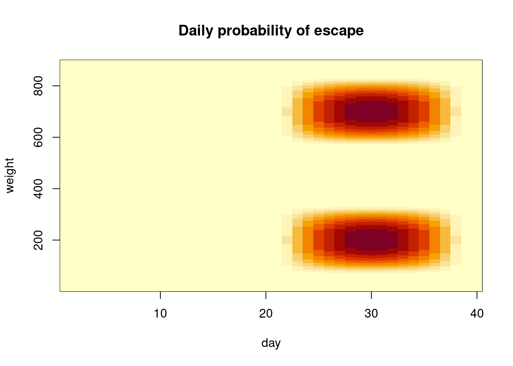

The grading will be done in peergrade. All grading questions and evaluations for this assignment are contained within this document in the collapsible Rubric blocks.
Installing and using CmdStanR:
See the Stan demos on how to use Stan in R (or Python). Aalto JupyterHub has working R and CmdStanR/RStan environment and is probably the easiest way to use Stan. * To use CmdStanR in Aalto JupyterHub: library(cmdstanr) set_cmdstan_path('/coursedata/cmdstan')
The Aalto Ubuntu desktops also have the necessary libraries installed.
To install Stan on your laptop, run ‘install.packages("cmdstanr", repos = c("https://mc-stan.org/r-packages/", getOption("repos")))’ in R. If you encounter problems, see additional answers in FAQ. For Aalto students, if you don’t succeed in short amount of time, it is probably easier to use Aalto JupyterHub.
If you use Aalto JupyterHub, all necessary packages have been pre-installed. In your laptop, install package cmdstanr. Installation instructions on Linux, Mac and Windows can be found at https://mc-stan.org/cmdstanr/. Additional useful packages are loo, bayesplot and posterior (but you don’t need these in this assignment). For Python users, PyStan, CmdStanPy, and ArviZ packages are useful.
If you edit files ending .stan in RStudio, you can click “Check” in the editor toolbar to make syntax check. This can significantly speed-up writing a working Stan model.
Reporting accuracy
For posterior statistics of interest, only report digits that are not completely random based on the Monte Carlo standard error (MCSE).
Example: If you estimate \(E(\mu) \approx 1.234\) with MCSE(\(E(\mu)\)) = 0.01, then the true expectation is likely to be between \(1.204\) and \(1.264\), it makes sense to report \(E(\mu) \approx 1.2\).
If you want to install R and RStudio locally, download R and RStudio.
There are tons of tutorials, videos and introductions to R and RStudio online. You can find some initial hints from RStudio Education pages.
When working with R, we recommend writing the report using quarto and the provided template. The template includes the formatting instructions and how to include code and figures.
Instead of quarto, you can use other software to make the PDF report, but the the same instructions for formatting should be used.
Report all results in a single, anonymous *.pdf -file and submit it in peergrade.io.
The course has its own R package aaltobda with data and functionality to simplify coding. The package is pre-installed in JupyterHub. To install the package on your own system, run the following code (upgrade="never" skips question about updating other packages):
Many of the exercises can be checked automatically using the R package markmyassignment (pre-installed in JupyterHub). Information on how to install and use the package can be found in the markmyassignment documentation. There is no need to include markmyassignment results in the report.
Recommended additional self study exercises for each chapter in BDA3 are listed in the course web page. These will help to gain deeper understanding of the topic.
Deadlines for all assignments can be found on the course web page and in Peergrade. You can set email alerts for the deadlines in Peergrade settings.
You are allowed to discuss assignments with your friends, but it is not allowed to copy solutions directly from other students or from internet.
You can copy, e.g., plotting code from the course demos, but really try to solve the actual assignment problems with your own code and explanations.
Do not share your answers publicly.
Do not copy answers from the internet or from previous years. We compare the answers to the answers from previous years and to the answers from other students this year.
Do not submit empty PDFs, almost empty PDFs, copy of the questions, nonsense generated by yourself or AI, as these are just harming the other students as they can’t do peergrading for the empty or nonsense submissions. Violations of this rule will be reported and investigated in the same way was plagiarism.
If you have any suggestions or improvements to the course material, please post in the course chat feedback channel, create an issue, or submit a pull request to the public repository!
Rubric
Can you open the PDF and it’s not blank nor nonsense? If the pdf is blank, nonsense, or something like only a copy of the questions, 1) report it as problematic in Peergrade-interface to get another report to review, and 2) send a message to TAs.
Is the report anonymous?
This is the template for assignment 9. You can download the qmd-file or copy the code from this rendered document after clicking on </> Code in the top right corner.
Please replace the instructions in this template by your own text, explaining what you are doing in each exercise.
Setup
The following loads several needed packages:
library(bayesplot)
This is bayesplot version 1.11.1.9000
- Online documentation and vignettes at mc-stan.org/bayesplot
- bayesplot theme set to bayesplot::theme_default()
* Does _not_ affect other ggplot2 plots
* See ?bayesplot_theme_set for details on theme setting
library(cmdstanr)
This is cmdstanr version 0.8.1.9000
- CmdStanR documentation and vignettes: mc-stan.org/cmdstanr
The following objects are masked from 'package:stats':
filter, lag
The following objects are masked from 'package:base':
intersect, setdiff, setequal, union
library(ggplot2)library(ggdist) # for stat_dotsintervallibrary(posterior)
This is posterior version 1.6.0
Attaching package: 'posterior'
The following object is masked from 'package:bayesplot':
rhat
The following objects are masked from 'package:stats':
mad, sd, var
The following objects are masked from 'package:base':
%in%, match
library(brms)
Loading required package: Rcpp
Loading 'brms' package (version 2.21.6). Useful instructions
can be found by typing help('brms'). A more detailed introduction
to the package is available through vignette('brms_overview').
Attaching package: 'brms'
The following objects are masked from 'package:ggdist':
dstudent_t, pstudent_t, qstudent_t, rstudent_t
The following object is masked from 'package:bayesplot':
rhat
The following object is masked from 'package:stats':
ar
# Globally specfiy cmdstan backend for brmsoptions(brms.backend="cmdstanr")# Tell brms to cache results if possibleoptions(brms.file_refit="on_change")# Set more readable themes with bigger font for plotting packagesggplot2::theme_set(theme_minimal(base_size =14))bayesplot::bayesplot_theme_set(theme_minimal(base_size =14))
This exercise is an example of a decision analysis (DA). In a broad context, this means optimizing over different decisions that lead to different outcomes that all have different utilities. In a Bayesian context, this means using posterior distributions to make decisions.
2 Escaping from the chicken coop
You are an adult chicken living in an organic chicken commune, where life is great, if a bit boring. You have settled in comfortably, but you want something more for your offspring. Your traveling corvid friends tell you of places where chickens eat corn all day, get ferried around in mobile chicken coops to see the world or get mental stimulation by being trained humanely to perform tricks. The chicken elders have gained access to the computers of your human caretakers and have found the results of a complicated statistical analysis of the growth curves of your relatives. Because you are a chicken, you don’t care about convergence diagnostics or priors.
Your task is to maximizes the chance of escape for your offspring.
Subtask 2.c
Compute and visualize the expected chicken weight for days 1–40 per diet, according to the model provided in the template. Do the predictions look reasonable? Why/why not?
Tip
To sample a “new chicken” from the posterior, use posterior_predict with options newdata=..., allow_new_levels=TRUE, sample_new_levels="gaussian", where you pass a dataframe as newdata which has a “new” chicken ID Chick and appropriate values for Time and Diet.
A simple GP model
The below fits a GP model to the chicken growth curves. It may take a few minutes to fit, but you can also download the fit .rds-file and work with that fit object.
fit <-brm( weight ~gp(Time) + (0+Time|Diet) + (0+Time|Chick),data = ChickWeight,family ="lognormal",file="additional_files/assignment9/gp_chicken_fit",cores = parallel::detectCores(),# For the template only, remove the below from your code!iter =500)
Warning: 84 of 1000 (8.0%) transitions ended with a divergence.
See https://mc-stan.org/misc/warnings for details.
Warning: 746 of 1000 (75.0%) transitions hit the maximum treedepth limit of 10.
See https://mc-stan.org/misc/warnings for details.
Loading required package: rstan
Loading required package: StanHeaders
rstan version 2.35.0.9000 (Stan version 2.35.0)
For execution on a local, multicore CPU with excess RAM we recommend calling
options(mc.cores = parallel::detectCores()).
To avoid recompilation of unchanged Stan programs, we recommend calling
rstan_options(auto_write = TRUE)
For within-chain threading using `reduce_sum()` or `map_rect()` Stan functions,
change `threads_per_chain` option:
rstan_options(threads_per_chain = 1)
Attaching package: 'rstan'
The following objects are masked from 'package:posterior':
ess_bulk, ess_tail
brms::pp_check(fit, type ="intervals_grouped", group ="Diet")
Using all posterior draws for ppc type 'intervals_grouped' by default.
Does the plot look right and is it readable? It should be quite close to the reference plot below:
Has it been recognized that the prediction time ?
Your chicken elders have been meticulously collecting data on what kind of characteristics have allowed previous chickens to escape. They have found out that both the age and the weight influence the (daily) probability of escape for a chicken:
If the chicken is too young, it is not yet mature enough to venture out into the world.
If the chicken is too old, it will not try to escape anymore.
If the chicken is small and has just the right size, it can try to squeze through a tiny crack in the fence.
If the chicken is big enough, it is strong enough to try to fly over the fence.
No matter the size, there is always a small residual probability that the chicken can escape.
Every day, chickens will try to escape if they are of the right age. Their daily escape probability \(e(\text{day}, \text{weight})\) is implemented in the daily_probability_of_escape(day, weight) function. The probability that a chicken with daily weights \(w = (w_1,\dots,w_N)\)has not escaped after \(i+1\) days can be computed as follows: \[
f_{i+1} = f_i \, (1 - e(i, w_i))
\] The chickenwise_probability_of_escape(weights) computes the probability that a chicken has escaped after length(weights) days.
Chickenwise probability of escape function
bump <-function(x, loc=0, scale=1){ xi = (x - loc) / scaleifelse(abs(xi) <1, exp(-1/(1-xi^2)), 0.)}daily_probability_of_escape <-function(day, weight){# Expects a day and a weight and computes the daily probability of escapebump(day, 30, 10) * (1e-2+bump(weight, 200, 150)+bump(weight, 700, 150))}chickenwise_probability_of_escape <-function(weights){# Expects a vector of daily weights from day 1 to N and computes the probability of# escape at the end of the time series prob_of_failure =1for(day in1:length(weights)){ prob_of_failure = prob_of_failure * (1-daily_probability_of_escape(day, weights[day])) }return(1- prob_of_failure)}
days =1:40weights =1:900heatmap_matrix =outer(days,weights,daily_probability_of_escape)image(days, weights, heatmap_matrix, xlab="day", ylab="weight", main="Daily probability of escape")

Figure 1: Daily probability of escape for a given day and weight
Subtask 2.a
Compute and visualize the distribution of the chickenwise probabilities of escape per diet, according to the model provided in the template.
Tip
You can reuse the predictions you created in the previous subtask. Work with the draws to compute the chickenwise probability of escape first, and then take the expectation!
# Useful r functions: chickenwise_probability_of_escape (see above)# rep(..., each=...), apply,# ggplot, stat_dotsinterval
Rubric
Does the plot look right and is it readable? It should be quite close to the reference plot below:
Subtask 2.b
Compute the expected probability of escape for each diet. Why would it be wrong to compute the expected probability of escape by applying the chickenwise_probability_of_escape function in the template to the daily expected chicken weights per diet computed in subtask 2.a? How does the correctly calculated value compare to the incorrectly calculated value? Why is one higher than the other?
# Useful r functions: chickenwise_probability_of_escape (see above)# apply, aggregate,
Rubric
Do the results look correct and have they been presented in a readable way? They should be roughly the first column below for the correct calculation and the second column below for the wrong calculation: [
diet chickenwise_loss meanwise_loss 1 0.55 0.83 2 0.57 0.67 3 0.50 0.10 4 0.52 0.15 ]{.content-hidden when-profile=“public”} * Has it been explained that the expected probability of escape depends on ? * Has it been explained that
is lower because ?
[AND/OR
for some diets the “incorrect” computation (meanwise_loss) is lower because the mean growth curve (used in the incorrect meanwise_loss) “by chance” passes through the region of low probability of escape, even though due to high within-population variation most chickens’ growth curve won’t pass through that region of low probability of escape?
(Due to a slightly misleading public rubric, either of the above answers would be sufficient)]{.content-hidden when-profile=“public”}
3 Overall quality of the report
Rubric
Does the report include comment on whether AI was used, and if AI was used, explanation on how it was used?
No
Yes
Does the report follow the formatting instructions?
Not at all
Little
Mostly
Yes
In case the report doesn’t fully follow the general and formatting instructions, specify the instructions that have not been followed. If applicable, specify the page of the report, where this difference is visible. This will help the other student to improve their reports so that they are easier to read and review. If applicable, specify the page of the report, where this difference in formatting is visible.
Please also provide feedback on the presentation (e.g. text, layout, flow of the responses, figures, figure captions). Part of the course is practicing making data analysis reports. By providing feedback on the report presentation, other students can learn what they can improve or what they already did well. You should be able to provide constructive or positive feedback for all non-empty and non-nonsense reports. If you think the report is perfect, and you can’t come up with any suggestions how to improve, you can provide feedback on what you liked and why you think some part of the report is better than yours.
Source Code
---title: "Assignment 9, 2023"subtitle: "Decision analysis"author: "Aki Vehtari et al."format: html: toc: true code-tools: true code-line-numbers: true number-sections: true mainfont: Georgia, serif page-layout: article pdf: geometry: - left=1cm,top=1cm,bottom=1cm,right=7cm number-sections: true code-annotations: noneeditor: source---# General information**This is for BDA 2023****The maximum amount of points from this assignment is 3.**We have prepared a **quarto template specific to this assignment ([html](template9.html), [qmd](https://avehtari.github.io/BDA_course_Aalto/assignments/template9.qmd), [pdf](template9.pdf))** to help you get started.:::{.callout-warning icon=false title="Setup" collapse=true}We recommend Aalto students use [jupyter.cs.aalto.fi](https://jupyter.cs.aalto.fi), for all others we also provide a [docker container](docker.html).::::::{.callout-tip collapse=false}**Reading instructions**:- [**The reading instructions for BDA3 Chapter 9**](../BDA3_notes.html#ch6) (decision analysis).{{< include includes/_grading_instructions.md >}}{{< include includes/_cmdstanr.md >}}:::{{< include includes/_reporting_accuracy.md >}}{{< include includes/_general_info.md >}}::: {.content-visible when-profile="public"}This is the template for [assignment 9](assignment9.html). You can download the [qmd-file](https://avehtari.github.io/BDA_course_Aalto/assignments/template9.qmd) or copy the code from this rendered document after clicking on `</> Code` in the top right corner.**Please replace the instructions in this template by your own text, explaining what you are doing in each exercise.**:::::: {.callout-warning collapse=false}## SetupThe following loads several needed packages:```{r}#| label: importslibrary(bayesplot)library(cmdstanr)library(dplyr)library(ggplot2)library(ggdist) # for stat_dotsintervallibrary(posterior)library(brms)# Globally specfiy cmdstan backend for brmsoptions(brms.backend="cmdstanr")# Tell brms to cache results if possibleoptions(brms.file_refit="on_change")# Set more readable themes with bigger font for plotting packagesggplot2::theme_set(theme_minimal(base_size =14))bayesplot::bayesplot_theme_set(theme_minimal(base_size =14))```:::This exercise is an example of a decision analysis (DA). In a broad context, this means optimizing over different decisions that lead to different outcomes that all have different utilities. In a Bayesian context, this means using posterior distributions to make decisions.# Escaping from the chicken coopYou are an adult chicken living in an organic chicken commune, where life is great, if a bit boring.You have settled in comfortably, but you want something more for your offspring.Your traveling corvid friends tell you of places where chickens eat corn all day,get ferried around in [mobile chicken coops to see the world](https://www.chicken-trailer.de/en/chicken-trailer-en/chicken-trailer-330) or [get mental stimulation by being trained humanely to performtricks](https://en.wikipedia.org/wiki/Marian_Breland_Bailey#:~:text=Popular%20acts%20included,that%20played%20basketball.).The chicken elders have gained access to the computers of your human caretakersand have found the results of a complicated statistical analysis of the growth curvesof your relatives. Because you are a chicken, you don't care about convergence diagnostics or priors.**Your task is to maximizes the chance of escape for your offspring.**::: {.callout-warning icon=false title="Subtask 2.c"}Compute and visualize the **expected chicken weight for days 1--40 per diet**, according to themodel provided in the template. Do the predictions look reasonable? Why/why not?:::::: {.callout-tip collapse=false}To sample a "new chicken" from the posterior, use [posterior_predict](https://rdrr.io/cran/brms/man/posterior_epred.brmsfit.html) with options `newdata=..., allow_new_levels=TRUE, sample_new_levels="gaussian"`, where you pass a dataframe as `newdata` which has a "new" chicken ID `Chick` and appropriate values for `Time` and `Diet`.::::::{.callout-warning collapse=false}### A simple GP modelThe below fits a GP model to the chicken growth curves. It may take a few minutes to fit, but youcan also [download the fit `.rds`-file](./additional_files/assignment9/gp_chicken_fit.rds) and work with that fit object.```{r fit}fit <- brm( weight ~ gp(Time) + (0+Time|Diet) + (0+Time|Chick), data = ChickWeight, family = "lognormal", file="additional_files/assignment9/gp_chicken_fit", cores = parallel::detectCores(), # For the template only, remove the below from your code! iter = 500)brms::pp_check(fit, type = "intervals_grouped", group = "Diet")```::::::{.content-visible when-profile="public"}```{r}# Useful r functions:# rep(..., each=...), cbind, colMeans,# posterior_predict(..., newdata=..., allow_new_levels=TRUE, sample_new_levels="gaussian")# ggplot, geom_line, aes(..., group=..., color=...)```::::::{.callout-note icon=false title="Rubric"}* Does the plot look right and is it readable? It should be quite close to the reference plot below:* Has it been recognized that the prediction time [extends very/too far into the future, probably making predictions unreliable]{.content-hidden when-profile="public"}?:::Your chicken elders have been meticulously collecting data on what kind of characteristics have allowedprevious chickens to escape. They have found out that both the age and the weight influence the (daily)probability of escape for a chicken:* If the chicken is too young, it is not yet mature enough to venture out into the world.* If the chicken is too old, it will not try to escape anymore.* If the chicken is small and has just the right size, it can try to squeze through a tiny crack in the fence.* If the chicken is big enough, it is strong enough to try to fly over the fence.* No matter the size, there is always a small residual probability that the chicken can escape.Every day, chickens will try to escape if they are of the right age.Their daily escape probability $e(\text{day}, \text{weight})$ is implemented in the `daily_probability_of_escape(day, weight)` function.The probability that a chicken with daily weights $w = (w_1,\dots,w_N)$ **has not escaped** after $i+1$ days can be computed as follows:$$ f_{i+1} = f_i \, (1 - e(i, w_i))$$The `chickenwise_probability_of_escape(weights)` computes the probability that a chicken **has escaped** after `length(weights)` days.:::{.callout-tip collapse=true}### Chickenwise probability of escape function```{r}bump <-function(x, loc=0, scale=1){ xi = (x - loc) / scaleifelse(abs(xi) <1, exp(-1/(1-xi^2)), 0.)}daily_probability_of_escape <-function(day, weight){# Expects a day and a weight and computes the daily probability of escapebump(day, 30, 10) * (1e-2+bump(weight, 200, 150)+bump(weight, 700, 150))}chickenwise_probability_of_escape <-function(weights){# Expects a vector of daily weights from day 1 to N and computes the probability of# escape at the end of the time series prob_of_failure =1for(day in1:length(weights)){ prob_of_failure = prob_of_failure * (1-daily_probability_of_escape(day, weights[day])) }return(1- prob_of_failure)}```:::```{r}#| fig-cap: Daily probability of escape for a given day and weight#| label: fig-probdays =1:40weights =1:900heatmap_matrix =outer(days,weights,daily_probability_of_escape)image(days, weights, heatmap_matrix, xlab="day", ylab="weight", main="Daily probability of escape")```::: {.callout-warning icon=false title="Subtask 2.a"}Compute and visualize the **distribution of the chickenwise probabilities of escape per diet**,according to the model provided in the template.:::::: {.callout-tip collapse=false}You can reuse the predictions you created in the previous subtask.**Work with the draws to compute the chickenwise probability of escape first, and then take the expectation!**::::::{.content-visible when-profile="public"}```{r}# Useful r functions: chickenwise_probability_of_escape (see above)# rep(..., each=...), apply,# ggplot, stat_dotsinterval```::::::{.callout-note icon=false title="Rubric"}* Does the plot look right and is it readable? It should be quite close to the reference plot below::::::: {.callout-warning icon=false title="Subtask 2.b"}Compute the **expected probability of escape for each diet**.Why would it be wrong to compute the expected probability of escape byapplying the `chickenwise_probability_of_escape` function in the template to the*daily expected chicken weights per diet* computed in subtask 2.a?How does the correctly calculated value compare to the incorrectly calculated value?Why is one higher than the other?::::::{.content-visible when-profile="public"}```{r}# Useful r functions: chickenwise_probability_of_escape (see above)# apply, aggregate,```::::::{.callout-note icon=false title="Rubric"}* Do the results look correct and have they been presented in a readable way? They should be roughly the first column below for the correct calculation and the second column below for the wrong calculation: [diet chickenwise_loss meanwise_loss 1 0.55 0.83 2 0.57 0.67 3 0.50 0.10 4 0.52 0.15]{.content-hidden when-profile="public"}* Has it been explained that the expected probability of escape depends on [the probabilities of escape of each chicken of the population, which depends on each chicken’s growth curve and not on the populationwise means]{.content-hidden when-profile="public"}?* Has it been explained that[for some diets the “correct” computation (chickenwise_loss)]{.content-hidden when-profile="public"} is lower because [the mean growth curve (used in the incorrect meanwise_loss) “by chance” passes through the region of high probability of escape, even though due to high within-population variation most chickens’ growth curve won’t pass through that region of high probability of escape]{.content-hidden when-profile="public"}?[AND/ORfor some diets the “incorrect” computation (meanwise_loss) is lower because the mean growth curve (used in the incorrect meanwise_loss) “by chance” passes through the region of low probability of escape, even though due to high within-population variation most chickens’ growth curve won’t pass through that region of low probability of escape?(Due to a slightly misleading public rubric, either of the above answers would be sufficient)]{.content-hidden when-profile="public"}:::{{< include includes/_overall_quality.md >}}